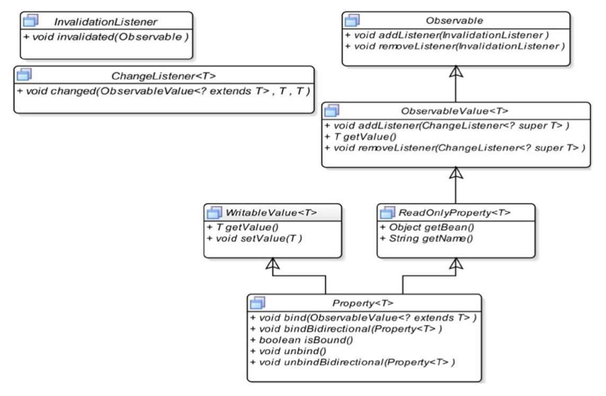
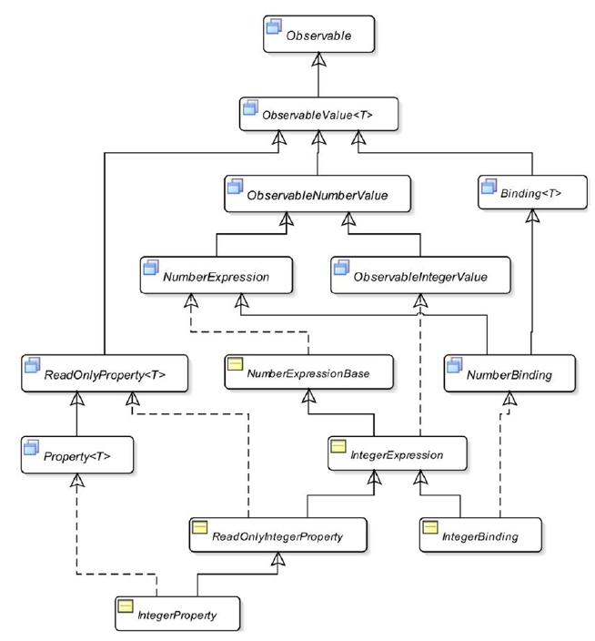
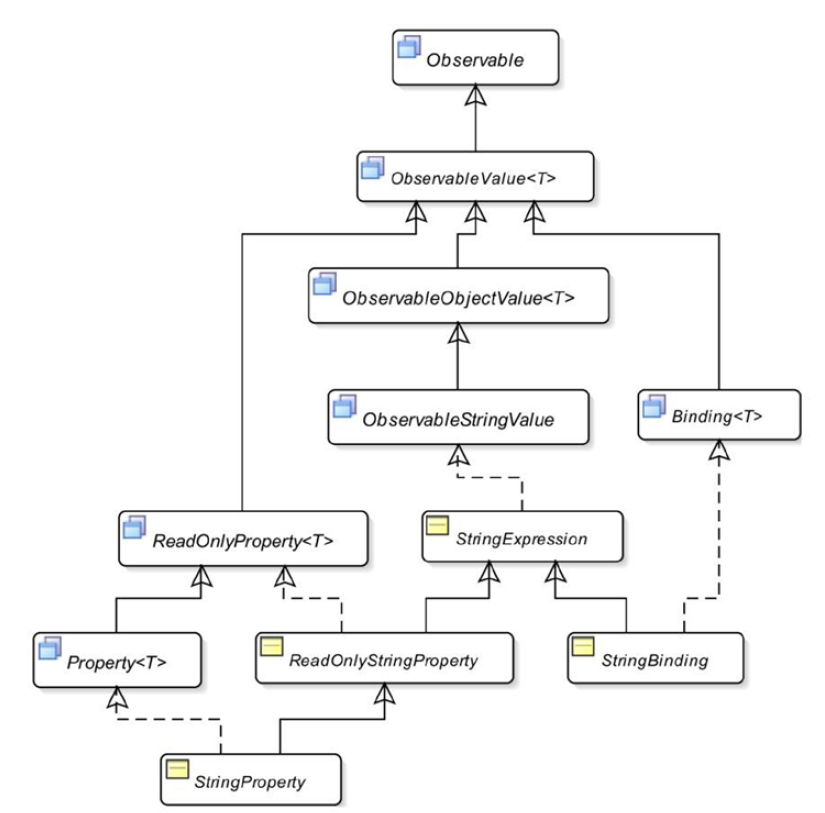

Érdekességek Java Beanekhez¶
A következőkben megismerkedünk a JavaFX Property-kkel.
Mik a Property-k?¶
Egy Java osztály kétféle member-t tartalmazhat:
- field-eket
- metódusokat
Egy osztály field-jei meghatározzák majd az osztályból készített objektumok állapotát, mely állapotot általában elrejtünk (private field-eket használunk).
A private field-ek kiolvasását és beállítását/módosítását publikus metódusokon keresztül végezzük, melyeket accessorok-nak (getter és setter) nevezünk.
Általánosságában, az olyan osztályokat, melyek hozzáférést engednek a private field-jeikhez publikus accessor-okon keresztül, továbbá van publikus paraméter nélküli konstruktoruk, illetve szerializálhatóak Java Bean-eknek nevezzük.
A Java Bean-ek accessor-ai egyben definiálják a Bean property-jeit is.
Attól függően, hogy milyen publikus accessor-ok vannak megadva egy Java Bean-hez beszélhetünk
- Csak olvasható
- Csak írható
- Olvasható és Írható
property-kről is.
Példa olvasható/írható property-re:
1 2 3 4 5 6 7 8 9 10 11 12 | |
Ebben a példában a property neve: name.
A Java Bean-ek egyik nagy előnye, hogy külső alkalmazások könnyen felhasználhatják őket.
Ezen felül egy-egy property megfigyelhetővé (Observable) tehető, azaz másik feliratkozhatnak a property változásának eseményére, mely alapján automatikus műveleteket végezhetnek el.
A fenti példában használt egyszerű name property mellett léteznek további property típusok is:
- indexed property: Property-k egy listája, melyeken belül index-ekkel érünk el egy-egy property-t.
- bound property: Olyan property, mely képes értesíteni az értékének változásáról a feliratkozókat
- constrained property: Egy olyan speciális változata a bound property-nek, melynek során az eseménykezelő képes megvétózni egy-egy változtatást.
Mik azok a kötések, azaz Binding-ok?¶
A programozásban sokszor használjuk a binding megnevezést, de jelen esetben az adatkötésekről (Data Binding) lesz szó. Az adatkötés során adatok közötti kapcsolatokat definiálunk (általában változók között), mely segítségével a frissítések során biztosítsuk a szinkronizációt. Példaként vegyük a következőt:
1 | |
Erre az értékadásra tekinthetünk úgy, mint egy adatkötésre, hiszen x értéke függ y és z értékétől.
Azonban fontos, hogy az értékadásnak mi az időbelisége.
Amennyiben az y értékéét módosítom az értékadás után, akkor x értéke nem fog frissülni.
Sok esetben azt szeretnénk, hogy egy hosszabb idejű kötés jöjjön létre, melynek során, ha módosul valamilyen tényező (változóérték), akkor a változás kihatással legyen a függő értékre is.
A fentiek alapján megkülönböztetünk függő értéket (dependant), illetve annak függőségeit (dependencies).
Az adatkötéseket többféleképpen is csoportosíthatjuk. Egyrészt az adatkötés kiértékelési stratégiája szerint lehet:
- eager binding: a függőségek módosításakor azonnal újrakalkuláljuk a függő értéket
- lazy binding: csak a következő kiolvasáskor frissítjük az értéket (hiszen többször is módosulhatnak a függőségek addig, amig egyáltalán szükségünk lesz a függő értékre)
Másrészt a függőségek irányát tekintve beszélhetünk:
- egyirányú (unidirectional): Egyirányú, azaz a függőségekben bekövetkező változások kihatással vannak a függő értékre, de fordítva nem igaz
- kétirányú (bidirectional): Oda-vissza irányuló függőség esetén általában két változó közötti adatszinkronizációt értünk (pl.:
Personobjektumnameproperty-je függ egyTextFieldaktuális értékétől).
JavaBeans API támogatás kötésekhez¶
A JavaBeans API már régóta ad támogatást az adatkötésekhez, mely során a két legfontosabb osztály:
java.beans.PropertyChangeListenerjava.beans.PropertyChangeSupport
Tekintsük meg a Person bean osztály kiegészítését:
1 2 3 4 5 6 7 8 9 10 11 12 13 14 15 16 17 18 19 20 21 22 23 24 25 26 27 28 | |
A példában szereplő name property olvasható és írható is, továbbá egy bound property, mivel módosítás során értesítést küld a feliratkozott eseménykezelőknek a módosítás tényéről a pcs.firePropertyChange("name", oldName, newName); hívás segítségével.
Az érdeklődők a két megadott metódus segítségével tudnak fel- illetve leiratkozni az eseményről (addPropertyChangeListener és removePropertyChangeListener).
A változtatások detektáláshoz készítsünk egy osztályt, melyben ki is használjuk a fenti lehetőségeket!
1 2 3 4 5 6 7 8 9 10 11 12 13 14 15 16 17 18 | |
A main-ben létrehozunk egy Person objektumot, majd feliratkoztatjuk a statikus metódusunkat a PropertyChangeEvent-ekre.
Amikor átállítjuk a Person objektum name property-jét, akkor a setter belül meghívja a pcs.firePropertyChange("name", oldName, newName); metódust, mely értesíti az összes feliratkozót, és ennek eredményeképpen kiírjuk a régi és új értékeket a konzolra.
Property-k használata JavaFX-ben¶
Az előzőleg bemutatott technika az alacsonyszintű Java Beans API-t használta a változások automatikus detektálására.
A JavaFX egy szinttel feljebb lép és komplexebb, rugalmasabb lehetőségeket nyújt a számunkra.
Az automatikus változtatás detektáláshoz a legtöbbször az Observer tervezési mintát alkalmazzák (többek között eseménykezeléseknél is).
JavaFX-ben az összes property automatikusan Observable is lesz, mely segítségével automatikusan detektálhatjuk, ha az adott property értéke invaliddá válik (változott egy függőségének értéke), illetve azt is ha az értéke megváltozott.
A JavaFX-ben használatos property-k lehetnek csak olvasható, illetve olvasható/írható property-k. Az olvasható/írható property-k teljes mértékben támogatják az adatkötést, csak olvasható esetben viszont az adott property nem függhet mástól, de tőle függhetnek.
JavaFX-ben a különböző típusú property-khez különböző property osztályok tartoznak, melyek egy hierarchiát alkotnak.
Például a StringProperty, DoubleProperty, IntegerProperty rendre a String, double és az int típusokhoz tartozó property osztályok.
Az előbbiek mind-mind absztrakt osztályok, melyek két megvalósítással rendelkeznek.
Egy megvalósítás az olvasható/írható viselkedéshez, egy pedig a csak olvasható viselkedéshez.
Például a SimpleDoubleProperty osztály használható olvasható/írható property-khez, illetve a ReadOnlyDoubleProperty a csak olvasható double property-khez.
Az alábbi példa egy int property-t deklarál, melynek kezdőértékét 42-re állítja:
1 | |
A property osztályokhoz kétféle getter és setter tartozik:
get()ésset(): primitív típusokkal operálnakgetValue()éssetValue(): objektumokkal operálnak
A csak olvasható property-kkel való munka egy kicsit trükkösebb.
A ReadOnlyXXXWrapper osztály belül két property-t tárol: egy olvasható/írhatót és egy csak olvashatót is.
Ezek a property-k folyamatosan szinkronban vannak.
A ReadOnlyXXXProperty típusú property-t a Wrapper-től kell elkérnünk a getReadOnlyProperty() metódushívással.
Lássunk egy pici példát is!
1 2 3 4 5 6 7 8 9 10 | |
A fenti példa alapján sejthető, hogy amennyiben a Wrapper-t publikusan kiengednénk, akkor nem lenne semmi értelme, mert ugyanúgy módosítható lenne a property értéke.
Ezért a Wrapper-t általában private field-ként használjuk egy-egy osztályon belül és csak a ReadOnlyXXXProperty-t tesszük publikusan elérhetővé.
A következő egyszerű (csak egy értéket tároló) típusokhoz használhatunk property osztályokat:
- int
- long
- float
- double
- boolean
- String
- Object
Egy-egy property a következő információkat tárolja:
- Referencia a bean objektumra, amely őt tárolja
- A property nevét
- A property értékét
Ez alapján találhatunk konstruktorokat is az adott property-khez, melyekből a legteljesebb peraméterlistával rendelkező a következőképpen néz ki (példában int-re, de általánosan érvényes ez a szabály):
1 2 3 4 5 | |
A property-k nem mindig tartoznak bean-hez, így beszélhetünk egyedülálló (standalone) property-kről.
Ilyenkor a konstruktorban a bean-t állíthatjuk null-ra.
Amennyiben az értékeket nem adjuk meg, akkor numerikus értékek esetében 0 lesz az érték, boolean-ra false, továbbá a referencia típusok a null értéket veszik fel.
Amennyiben a property nevét nem állítjuk be, akkor annak neve egy üres string lesz.
A property objektumoktól a getBean() és a getName() metódusokkal kérhetjük el a tartalmazó bean referenciáját, illetve a property nevét (a get() és getValue() használatával pedig az értéket, ahogy azt korábban láttuk már).
Ezek után írjuk újra a Person osztályt úgy, hogy a sima String helyett StringProperty-t használ.
1 2 3 4 5 6 7 8 9 10 11 12 13 14 15 | |
A fenti példában láthatjuk, hogy az accessorok, hogyan módosulnak a property megadásoknak megfelelően. Erre azért van szükség, mert továbbra is szeretnénk, hogy a rendszerünk működjön (3rd party alkalmazások is használhatják a rendszerünket esetlegesen). Azzal, hogy az accessorokat megtartjuk nem okozunk breaking change-t, viszont nyerünk egy hatalmasat, mivel kihasználhatjuk a property-k előnyeit.
Lusta inicializálás¶
A property-k előnye némi hátránnyal is jár. A primitív típusok kevesebb memóriát esznek, viszont butábbak is. Amennyiben egy nagy rendszerünk van, akkor a feltehetőleg ritkábban használt property-ket érdemes lehet lustán inicializálni, ami egy kis plusz kóddal jár, viszont cserébe nyerhetünk egy ki memóriát. A lusta inicializálást akkor érdemes használni, ha az adott property értéke legtöbbször egy alapértelmezett értéket vesz fel vagy legtöbbször nem használja ki az adatkötés adta lehetőségeket.
Vegyünk például egy Monitor osztályt, melyben a monitor típusát is tároljuk.
Mivel a típusa legtöbbször "flat" lesz, így ezt felhasználhatjuk.
1 2 3 4 5 6 7 8 9 10 11 12 13 14 15 16 17 18 19 20 21 22 23 | |
A fenti példában megadjuk az alapértelmezett értéket, illetve tárolunk egy referenciát magára a StringProperty-re.
Azonban a property-t csak abban az esetben hozzuk létre ténylegesen, amikor valaki ténylegesen szeretné a StringProperty típusú objektumot használni (pl.: adatkötés létrehozásához).
A getter egészen addig csak a default értéket adja vissza ameddig a default értéken nem változtatunk.
Amint egy olyan setter hívás történik, amikor nem a default értéket akarja beállítani a felhasználó, akkor létrejön maga a property is (screenTypeProperty().set(newScreenType); hívás eredményeképpen).
A fenti példában nem nyerünk olyan sokat, de például a primitív típusoknál eljárhatunk úgy, hogy egészen addig egy primitív típusban tároljuk az értéket, ameddig magát a property-t nem kéri el valaki.
Property hierarchia¶
| Property hierarchia |
|---|
|  |
A hierarchia legtetején az Observable interfész áll, mely valamilyen adatot becsomagol és képes értesítéseket küldeni, amikor a tartalmazott adat invaliddá válik.
Ezekre az eseményekre InvalidationListener-ekkel tudunk feliratkozni, melyek értesülnek az eseményről.
Fontos, hogy ha egyszer a tartalom invaliddá vált, akkor a következőkben nem generálódik új esemény, így minimalizálva a rendszerben létrejövő események számát.
Az adat újraszámolása után ismét validdá válik.
Fontos
JavaFX-ben minden property egyben Observable is!
Az invalid állapotba lépés nem feltétlenül egyezik meg az adat megváltozásával.
Például egy ObservableList<T> rendezése során az értékek nem változnak benne, viszont invaliddá válik.
Ez a megkülönböztetés fontos, mivel a kétféle esemény eltérően viszonyul az azonnali (eager) és lusta (lazy) kiértékeléshez.
Amikor az adat invaliddá válik, akkor lusta kiértékelés esetén nem számoljuk újra az értékét csak akkor amikor legközelebb használni szeretnénk az adatot.
Mivel az adat változásáról (ChangeListener-el kezelhetjük) csak akkor tudunk nyilatkozni, ha újraszámoljuk annak értékét, így az nem támogatja a lusta kiértékelést.
Ezt a fajta megkülönböztetést már az ObservableValue<T> interfész adja számunkra, azaz annyival tud többet az Observable-höz képest, hogy tud értesítéseket küldeni a tárolt érték változásáról, melyet egy ChangeListener-el kezelhetünk.
A property-kben használt T getValue(); metódus az ObservableValue<T> interfészből jön.
Egy ChangeListener<T> rendelkezik a changed() metódussal, mely megkapja paraméterül a referenciát az ObservableValue<T>-re, illetve a régi és új értékeket.
Fontos
Az InvalidationListener-ek használata optimálisabb lehet, mivel így használhatunk lusta kiértékelést.
Amennyiben viszont az InvalidationListener-en belül szükségünk van az értékre, akkor az olvasási művelet végső soron úgyis triggerelne egy újraszámolást, tehát ilyen esetben használjunk ChangeListener-t!
A ReadOnlyProperty<T> interfész tovább bővíti az ObservableValue<T> interfészt és általános vázat ad az összes olvasható property számára, mellyel így már lekérdezhetjük a tartalmazó bean-t (Object getBean()) és a property nevét (String getName()).
Az osztály hierarchiából látszik, hogy a teljes értékű Property<T> property-k az írással/adat módosítással kapcsolatos műveleteit a WritableValue<T> interfészből kapják.
Maga a Property<T> interfész hozza be az adatkötés támogatását a következő metódusok támogatásával:
void bind(ObservableValue<? extends T> observable)void unbind()void bindBidirectional(Property<T> other)void unbindBidirectional(Property<T> other)boolean isBound()
Egyirányú kötést a bind metódus segítségével hozhatunk létre, melyben megadjuk, hogy az aktuális property értéke, mely másik értékhez legyen kötve, azaz mitől függ az értéke.
Kétirányú kötést a bindBidirectional metódus hívással végezhetünk.
A paraméterek típusából már látszik néhány dolog.
Kétirányú kötés nem lehet csak írható/olvasható property-k között, míg egyirányú kötésnél függhetünk csak olvasható értéktől is.
Fontos, hogy a generikus paramétereknek meg kell egyezniük, mert nyilván egy StringProperty értéke nem függhet egy DoubleProperty értékétől (később azért látunk majd trükköket, hogy hogyan lehet konverziókat végezni).
A többi metódus eléggé intuitív, így azokat nem magyarázzuk el.
Kötések használata JavaFX-ben¶
Az adatkötés nem más, mint egy kifejezés, aminek kiértékelése után egy darab értéket kapunk.
A kötés egy vagy több ObervableValue<T>-ból tevődik össze, melyek egyben a kötés függőségeit is jelentik.
A kötés objektum figyeli a függőségeinek változásait és ilyenkor újraszámolja a kifejezés értékét.
A JavaFX adatkötései mind lusta kiértékeléssel működnek, így valamelyik függőség invaliddá válásakor maga a kötés is invaliddá válik.
Amikor újra kéri valaki a kötés eredményét, akkor kerül sor a kifejezés újbóli kiértékelésére (get() vagy getValue() hívás hatására).
Az összes JavaFX property osztály támogatást ad az adatkötésekhez.
Vegyünk egy egyszerű példát, melyben sum = x + y kifejezést adunk meg egy kötés segítségével.
Ez a következőképpen adható meg:
1 2 3 4 | |
A kötéseknek van egy isValid() metódusa, mellyel lekérhetjük, hogy az adott binding értéke valid-e.
A NumberBinding aktuális értékének lekéréséhez használhatjuk az intValue(), longValue(), floatValue(), és doubleValue() metódusokat, melyek rendre a megfelelő típusú értékkel térnek vissza.
Egy kötés belül az összes függőségéhez létrehoz egy-egy InvalidationListener-t, melyek alapján figyeli azokat.
Amennyiben egy függőség invaliddá válik, akkor maga is invalid lesz.
Egy kötés objektum értékéhez akár egy property-t is hozzáköthetünk, mivel maga a Binding<T> osztály maga is származik az ObservableValue<T> osztályból (és egy egyirányú kötés megadásakor a bind() paramétere pontosan ez kell, hogy legyen).
Lássunk is egy példát:
1 2 3 4 5 | |
Ilyen esetben a z property már a korábban említett bound property kategóriába esik.
Amennyiben szeretnénk megszüntetni a kötést, akkor használjuk az unbind() metódust!
Fontos
Amennyiben egy property értékét függővé tesszük, akkor az értékének direkt beállítása (pl.: z.set(21);) RuntimeException-t eredményez.
Továbbá az is szabály, hogy egy property-nek egyszerre csak egy darab egyirányú kötése lehet.
Ha belegondolunk, akkor ez nem nagy meglepetés.
Mi lenne akkor, ha egyszerre szeretnénk a következők teljesülését z = x + y és z = a + b?
Ugyanakkor nem fog futásközbeni hibát eredményezni egy újabb bind() hívás csupán az előző kötést felülírja a rendszer, azaz nem kell az új kötés előtt meghívni az unbind()-ot.
Ezek a korlátozások a kétirányú kötések esetében nem élnek, pusztán az összes property szinkronban lesz.
Binding API¶
Az előzőekben már madártávlatból láttuk a kötések működését, most viszont részleteiben is megvizsgáljuk a Binding API-t. A Binding API-t két részre oszthatjuk:
- Magas szintű
- Alacsony szintű
A magas szintű API-t a JavaFX osztályai alkotják, melyek segítségével a legtöbb esetben meg tudjuk adni az összes kötéssel kapcsolatos igényünket. Amennyiben mégsem megoldható a kötéssel kapcsolatos összes elvárásunk, akkor az alacsony szintű API használatához le kell származtatnunk egy saját osztályt a magas szintűekből és itt kell kifejtenünk a kötésünk pontos viselkedését.
Magas szintű Binding API¶
A magas szintű Binding API két részből tevődik össze.
Egyrészt a Fluent API-vól és másrészt a Bindingosztályból.
Kötéseket létrehozhatunk a kizárólag az egyik használatával vagy a kettőt tetszőleges kombinálva is.
Fluent API¶
A Fluent API, mint olyan egy általános fogalom, illetve tervezési elv, melynek középpontjában a metódus láncolás áll, így megkönnyítve a beállításokat. A neve innen is eredeztethető, mivel ilyen módon "folyékonyabban" írható a kód. A Fluent API-knál nagyon fontos a visszatérési típus, hogy a metódus láncolásokat el tudjuk végezni. Magáról a Fluent API-ról többet olvashatsz itt.
Vegyünk egy egyszerű esetet, amikor 3 property értékét szeretnénk összeadni.
Legyen ez a 3 property x, y és z!
Alapesetben ezt írnánk, feltéve, hogy mind a 3 property mondjuk IntegerProperty:
1 2 | |
A Fluent API kihasználásával viszont ez így is írható:
1 | |
A kulcs, hogy az add() metódus maga is egy NumberBinding-ot ad vissza, aminek szintén van add metódusa, melyek egy helyről "jönnek".
Ahhoz, hogy jobban átlássuk a teljes képet vizsgáljuk meg a kapcsolódó osztály hierarchiát!
| Fluent API osztály hierarchia |
|---|
|  |
A fenti ábra az IntegerProperty-re fókuszálva mutatja be az öröklődési hierarchiát, de a többi típusnál is hasonló a felépítés.
A hierarchia egy részét már ismerjük, azonban vannak fontos további elemek is.
Az osztályok között vannak olyanok is, amik az automatikus boxing és unboxing miatt vannak jelen.
A fluent API megértéséhez az XXXExpression és az XXXBinding osztályokra és interfészekre kell fókuszálnunk!
Az XXXExpression interfészek tartalmazzák az összes olyan metódust, melyek segítenek az adatkötésnek megadott kifejezések specifikálásában.
Például a fent használt add metódus a NumberExpression interfészből jön.
Az add mellett használható a negate(), subtract(), multiply(), divide() metódusok hada is.
Továbbá találunk itt relációs műveleteket is, melyek BooleanBinding-ot adnak vissza, illetve egy további fontos csoportot adnak az asString metódusok, melyek StringBinding-ot adnak vissza (az adatkötések világában tekinthető kvázi a toString()-nek).
Mielőtt ezen az ágon továbbhaladnánk, vizsgáljuk meg a másik központi elemet, magát a Binding<T> interfészt!
A Binding<T> interfész reprezentálja azt az értéket, melynek értéke egy vagy több másikétól függ.
Így az alábbi metódusokat biztosítja:
public void dispose(): Jelezhetjük, hogy aBinding-ot már nem használjuk, így a függőségekre való referenciákat eldobja a rendszer (GC miatt lehet rá szükség)public ObservableList<?> getDependencies(): Nem módosítható listát ad vissza. Ezen keresztül nem tudunk újabb függőségeket felvenni, csupán debug célokat szolgál, így azt production kódban soha ne használjuk!public void invalidate(): A kötést invalid állapotba helyezipublic boolean isValid(): állapot lekérdezéshez
A NumberBinding pusztán egy marker interfész az összes szám alapú kötéshez, melyet aztán a tényleges implementációk megvalósítanak, mint például az IntegerBinding, DoubleBinding, stb.
A másik öröklődési ágról egy IntegerProperty megkapja a korábban már kifejtett NumberExpression által megadott metódusokat.
Ezen felül az ObservableNumberValue interfész biztosítja az intValue(), longValue(), stb. metódusokat.
A NumberExpression osztály egy konkrét megvalósítása a NumberExpressionBase.
A fentiek megértése után már elég jó benyomásunk van a magasszintű Binding API használatáról, de a Binding osztályokat használjam vagy a property értékét vessem alá adatkötésnek?
Nézzünk egy példát, ahol a kör területét számoljuk ki annak sugara alapján.
A példában megmutatjuk mindkét megközelítést:
1 2 3 4 5 6 7 8 9 10 11 12 13 14 15 16 17 | |
A számok mellett érdemes lehet megnézni a StringProperty-hez tartozó Fluent API-t is, mivel a String már referencia típus, nem pedig primitív.
| String Fluent API osztály hierarchia |
|---|
|  |
Az ObservableStringValue get() metódusa nyilván egy String-et ad vissza.
A StringExpression nem aritmetikai műveleteket támogat, hanem string műveleteket, mint például konkatenáció, összehasonlítás, null check, stb.
A getValue() metódus mellett rendelkezünk ebben az esetben egy getValueSafe() metódussal is, mely null esetén üres String-et ad vissza.
Extrák¶
Az ObjectExpression és az ObjectBinding segítségével tetszőleges objektumokra történő kötések hozhatók létre.
A hierarchia nagyon hasonló a String-nél látottakhoz.
Lássunk egy példát a használatára
1 2 3 4 5 6 7 8 9 10 11 12 13 14 15 16 | |
A Binding API biztosít a számunkra ternary operátort is a When osztály formájában:
1 | |
value1-nek és value2-nek ugyanolyan típusúnak kell lennie.
A fentiek mellett az API ad számunkra még egy Bindings osztályt, mely rengeteg statikus metódust tartalmaz.
Lényege, hogy egyszerűen és gyorsan lehet kötéseket létrehozni.
Mivel a lista igen hosszú így itt azt nem mutatjuk be (illetve több dolog i kiváltható vele amit már részletesen megnéztünk).
Alacsony szintű Binding API¶
Előfordulhatnak estek amikor a magas szintű Binding API nem megfelelő az igényeinknek.
Például egy Observable számnak nem tudjuk a négyzetgyökét kiszámoltatni.
Ilyenkor saját kiterjesztéseket írhatunk, melyek megvalósítják az igényelt funkcionalitást.
Ennek 3 lépése van:
- Az egyik létező
Bindingosztályt terjesszük ki (származtassunk belőle). A négyzetgyökös példánál maradva használhatjuk aDoubleBinding-ot. - Mindig hívjuk meg a parent
bind()metódusát a függőségek kötéséhez! Itt az összes függőséget adjuk meg. - A lényeg pedig, hogy a
computeValue()metódust írjuk felül! (Amennyiben egyéb funkcionalitás is szükséges, akkor természetesen több metódust is felülírhatunk)
Például a négyzetgyök kiszámításához a következőt írhatjuk:
1 2 3 4 5 6 7 8 9 10 11 12 13 14 15 16 | |
Mivel a fenti példában anonymous class-t használtunk (aminek ugyebár nincs konstruktora), így az init blokkban hívtuk meg a bind() metódust.
Amennyiben többször is szeretnénk felhasználni a kötés típusunkat, akkor érdemes nevesíteni az osztályt, ami nézhet ki az alábbihoz hasonlóan:
1 2 3 4 5 6 7 8 9 10 11 12 13 | |
A használat helye:
1 2 3 4 5 6 7 8 9 | |
Mivel akár egész számokat is használhatunk, így nem szorítjuk meg túlságosan azt, hogy milyen Observable objektumokat kaphatunk paraméterül, viszont arra szükségünk van, hogy a megadott Observable objektumtól le tudjuk kérni a double értékét, mivel négyzetgyököt csak erre tudunk számolni.
Emiatt az ObservableNumberValue típust választjuk, mely tartalmazza a doubleValue() metódust.
Összegzés¶
A property-k és az adatkötések rendkívül fontos részét képezik az egész JavaFX API-nak. Amennyiben megvizsgáljuk a grafikus vezérlőelemeket, azt fogjuk tapasztalni, hogy az összes adatot property formájában tárolják.
Például egy TextField az aktuális szöveg értékét egy property-ben tárolja:
1 2 | |
Ez hatalmas előnyt ad a kezünkbe, mivel a különböző felületi elemek adatai között rugalmasan hozhatunk létre adatkötéseket. Ezen felül akár a model osztályainkat is megírhatjuk property-k segítségével, melyeket így könnyebben szinkronban tarthatunk a felületi vezérlőkkel.
Feladatok¶
Feladat
Csináljunk egy egyszerű JavaFX alkalmazást, ahol Label elemek segítségével az ablak aktuális méretét mutatjuk!
A feladat megoldása során használjunk property-ket és kötéseket!
Feladat
Készítsünk egy saját, alacsony szintű Binding-ot, mely képes a szám sin-át kiszámítani!
Származtassunk le a DoubleBinding osztályból!
Videók¶
- Property bevezető
- Adatkötések, Java Beans Property figyelés
- JavaFX Property-k
- ReadOnlyProperty és lusta kiértékelés
- Property hierarchia
- Binding-ok használata
- Magas szintű Binding API
- Alacsony szintű Binding API